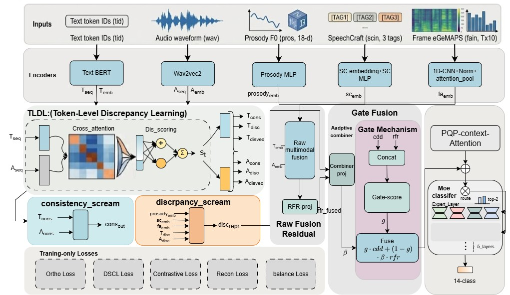
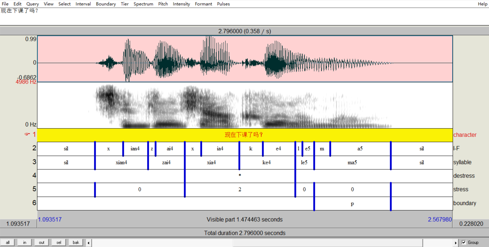
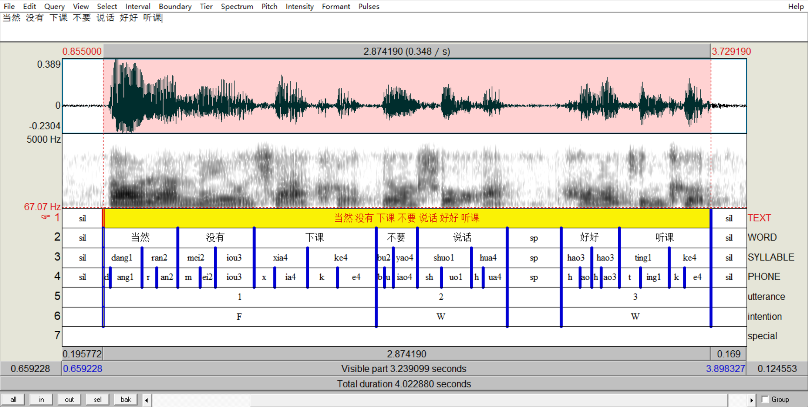
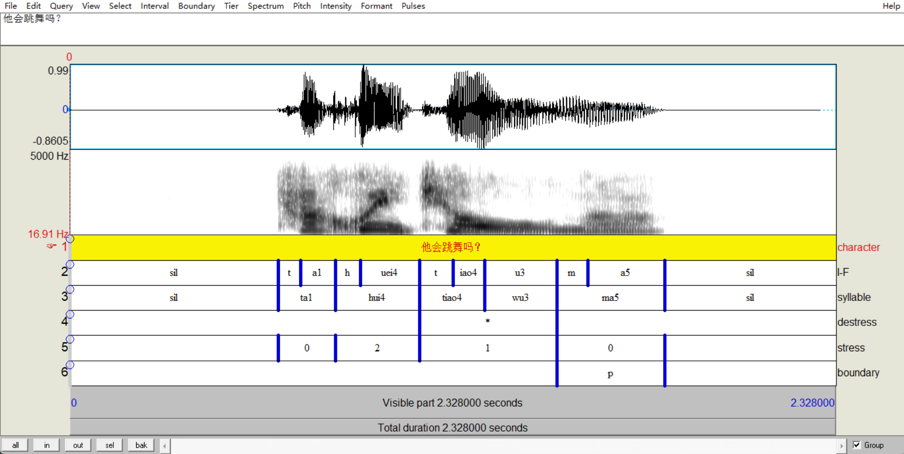
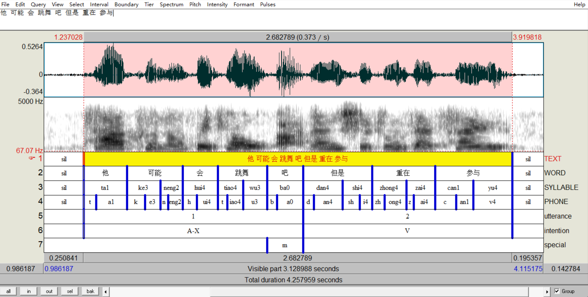
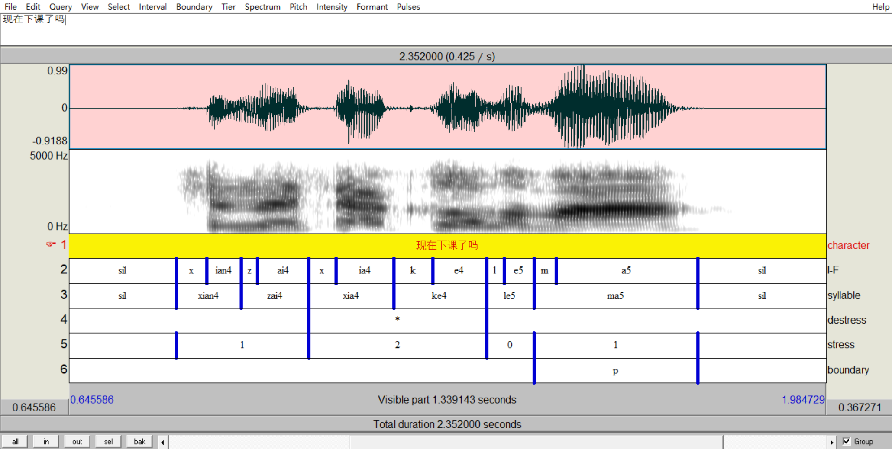
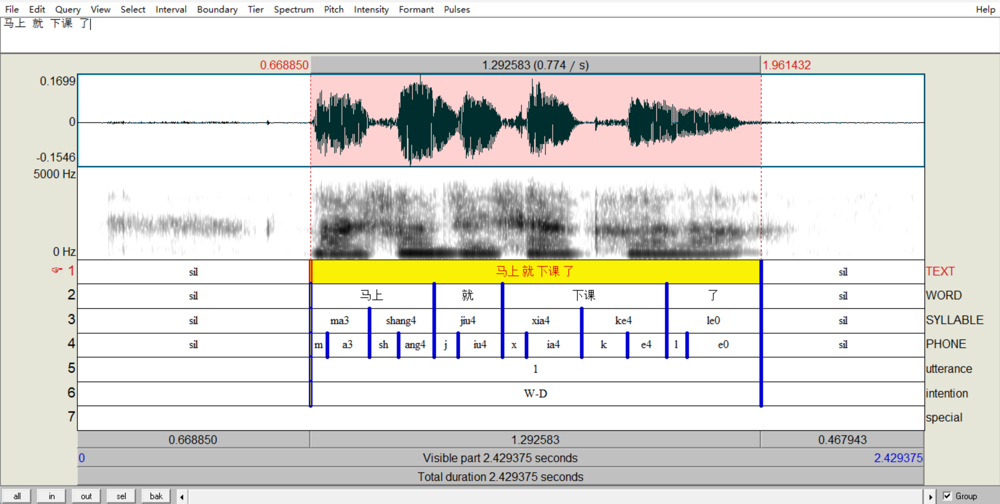
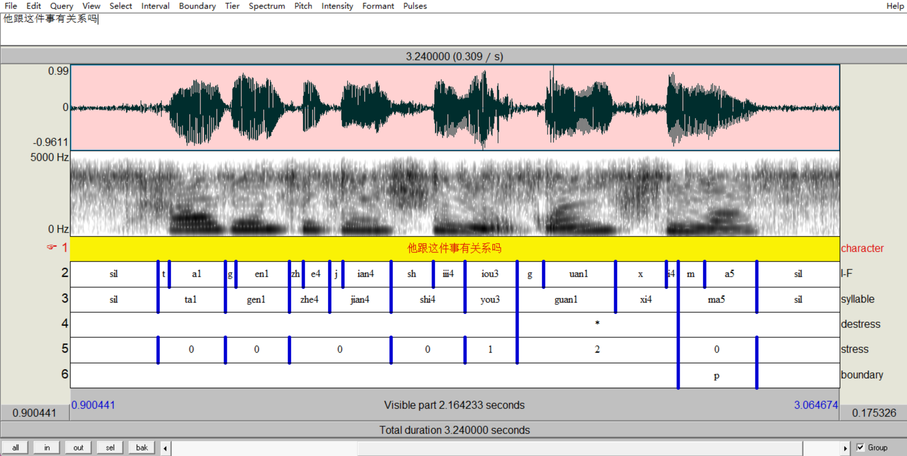
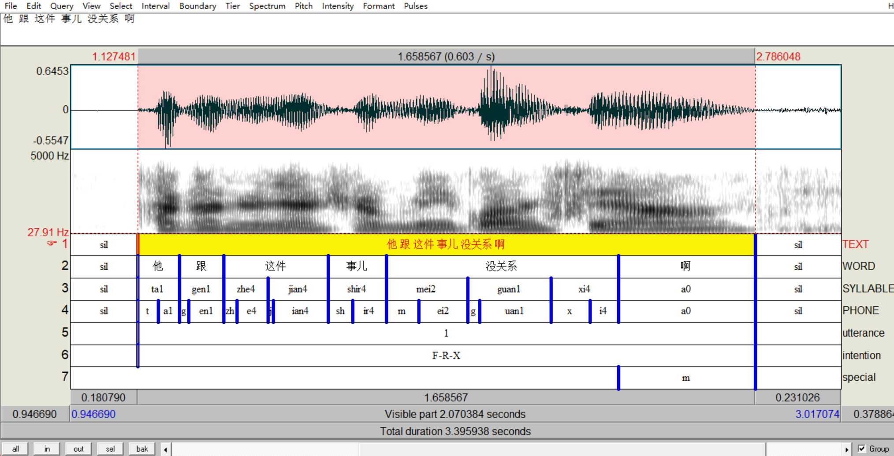

Supplementary demo page with model overview, abstract, and audio samples from our constructed benchmark.
Existing multimodal speech-language understanding methods mainly emphasize cross-modal consistency fusion and are effective at modeling the collaborative relationship between text and speech. However, they remain insufficient for deep pragmatic phenomena such as rhetorical questions, sarcasm, and indirect expressions. In such spoken communication scenarios, speaker intention is often not directly conveyed by literal content alone, but is jointly determined by fine-grained patterns of consistency and conflict between textual semantics and vocal expression. As a result, relying solely on a unified fusion representation is insufficient to capture deep pragmatic cues.
To address this issue, we propose the Consistency-Discrepancy Decoupling Network (CDD-Net), which explicitly models cross-modal consistency and semantic discrepancy. Specifically, the Token-Level Discrepancy Localization (TLDL) module identifies cross-modal conflict regions at the granularity of text tokens and speech frames. The Dual-Space Contrastive Learning (DSCL) mechanism organizes multimodal evidence into a consistency semantic space and a discrepancy semantic space, thereby reducing the interference between semantically distinct but functionally different cues in a shared representation. Furthermore, Discrepancy-Guided Contrastive Pairing (DGCP) and Consistency-Discrepancy Reconstruction (CDR) enhance the discriminability and information completeness of discrepancy-aware representations. In addition, the Raw Fusion Residual (RFR) path improves robustness during training and generalization.
To support research on this task, we construct a speech-text multimodal dataset for Chinese pragmatic spoken language understanding, covering typical scenarios including shallow/deep intention discrimination and fine-grained speech act recognition. Experimental results show that CDD-Net outperforms strong multimodal baselines and several advanced cross-modal models on the fine-grained pragmatic intention recognition task in the constructed dataset.
CDD-Net frames multimodal pragmatic understanding as a structured consistency-discrepancy modeling problem. Given a speech-text input pair, the model proceeds through four stages: (1) encoding textual and acoustic inputs via Chinese BERT and Wav2Vec2; (2) localizing cross-modal conflict at token-frame granularity through TLDL; (3) organizing evidence into separate consistency and discrepancy spaces via DSCL; and (4) combining structured decoupling with a direct raw-fusion fallback via RFR. The architecture is applied to two complementary tasks that share the same TLDL backbone but employ task-specific fusion heads.

Our benchmark covers two complementary tasks that share speech-text inputs: Task B — binary literal vs. deep classification on the question utterance; Task A — 14-class fine-grained intention recognition on the response utterance. The samples below are drawn from the test set and are grouped as Q-R conversational pairs.
Pair 1 and Pair 3 share identical question text (“现在下课了吗？” — “Is class over?”) but differ in prosody and pragmatic intent. Listen and compare: in Pair 1 the speaker uses a calm, neutral rising tone typical of a genuine information-seeking question (literal); in Pair 3 the speaker uses a sharper, impatient falling contour signaling a rhetorical reprimand (deep) — the speaker already knows the answer and is expressing dissatisfaction.
| Pair | Role | Type | Text | Translation | Audio | Intent Label |
|---|---|---|---|---|---|---|
| 1 | Question | Literal | 现在下课了吗？ | Is class over? | — | |
 Q waveform + spectrogram + TextGrid alignment (character, syllable, stress, boundary) |
||||||
| Response | 当然没有下课，不要说话，好好听课 | Of course not. Stop talking and pay attention. | F W W | |||
 R waveform + spectrogram + TextGrid alignment (word, syllable, phone, utterance, intention: F → W → W) |
||||||
| 2 | Question | Deep | 他会跳舞吗？ | Can he dance? | — | |
 Q waveform + spectrogram + TextGrid alignment (character, syllable, stress, boundary) |
||||||
| Response | 他可能会跳舞吧，但是重在参与 | Maybe he can, but what matters is participation. | A V | |||
 R waveform + spectrogram + TextGrid alignment (word, syllable, phone, utterance, intention: A → V) |
||||||
| 3 | Question | Deep | 现在下课了吗？ | Is class over? (rhetorical) | — | |
 Q waveform + spectrogram + TextGrid alignment — compare with Pair 1 Q: same text, different prosody |
||||||
| Response | 马上就下课了 | It’ll be over soon. | W D | |||
 R waveform + spectrogram + TextGrid alignment (word, syllable, phone, utterance, intention: W + D) |
||||||
| 4 | Question | Deep | 他跟这件事有关系吗？ | Does he have anything to do with this? | — | |
 Q waveform + spectrogram + TextGrid alignment (character, syllable, stress, boundary) |
||||||
| Response | 他跟这件事儿没关系啊 | He has nothing to do with it. | F R | |||
 R waveform + spectrogram + TextGrid alignment (word, syllable, phone, utterance, intention: F + R) |
||||||
Task A uses a 14-class taxonomy organized into five meta-categories. Each prosodic phrase in a response utterance is independently labeled with one of these intent labels. The labels shown in the audio samples above (e.g., F, W, A, V, D, R) correspond to this taxonomy. Intent labels follow a shared guideline centered on the responder's primary communicative focus, including factual/informational content, attitude, emotion, commitment, and discourse extension.
| Meta-Category | Labels | Description |
|---|---|---|
| Literal / Factual | F A T W | Factual confirmation, contradiction, conditional answer, or knowledge/suggestion-based response |
| Attitude | S D R | Submission/apology, disagreement, or response to dissatisfaction involving a third party |
| Emotion | E V | Emotional support or perfunctory response |
| Commitment | I H | Promise or expression of anticipation/desire |
| Extension | C K M | Topic shift, continuation of the original topic, or counter-question |
Our benchmark is a Chinese speech-text multimodal dataset for pragmatic spoken language understanding. It covers two complementary tasks sharing the same conversational Q-R pairs.
| Item | Task A | Task B |
|---|---|---|
| Total samples | 6,580 | 4,116 |
| Train split | ~5,214 | ~3,233 |
| Dev split | ~659 | ~389 |
| Test split | ~707 | ~494 |
| Number of labels | 14 | 2 |
If you find this work useful, please consider citing:
@inproceedings{anonymous2026cddnet,
title = {CDD-Net: Consistency-Discrepancy Decoupling
for Chinese Pragmatic Intention Recognition},
author = {Anonymous},
booktitle = {ACM Multimedia (ACM MM)},
year = {2026},
note = {Under review}
}